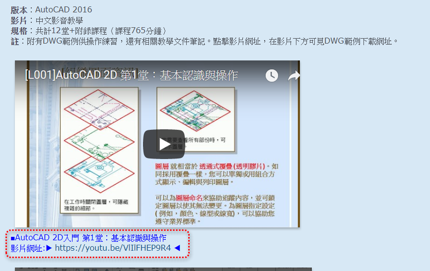
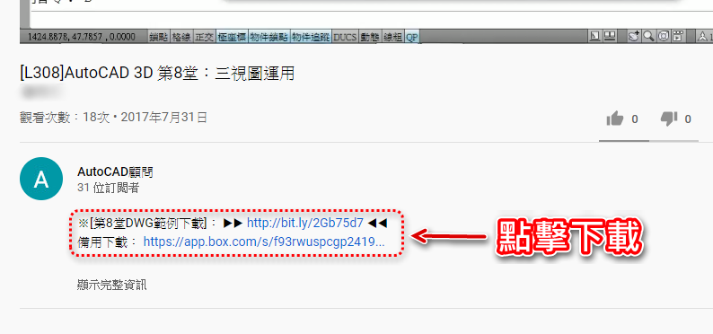

Q1：線上課程影片要在哪裡觀看？
A1：當您選修課程付費完畢，即可前往論壇選修課程主題中，直接點選觀看課程影片。
PS:記得登入論壇會員才可以點選網址觀看。

Q2：觀看影片時只能透過電腦嗎？
A2：線上課程影片需要透過網路，即可在手機、平板、電視、桌上型及筆記型電腦觀看，只要登入您的gmail信箱(google帳號)，即可走到哪看到哪。
Q3：綁定後的GMAIL信箱是否能更改？
A3：線上課程影片需綁定gmail信箱(google帳號)，綁定之後無法變更GMAIL信箱。
Q4：課程影片是否有觀看期限？
A4：此課程為終身學習，觀看線上課程影片無期限，活到老看到老喔。
註:如果購買【全課程訂閱制】線上課程，影片觀看期限為一年(365天)。
Q5：線上課程是否有練習範例及資料？
A5：每個主題課程均有dwg範例下載及相關重點文字檔，高階入門及繪圖準則有提供PDF課程講義。
Q6：課程練習操作時遇到疑問該怎麼辦？
A6：隨時可以上論壇的現在課程討論版區發文，蘋果爸會盡量第一時間回覆。
課程討論區： https://www.autocad-tw.com/f72-forum
Q7：有課程外的問題是否可以提問，例如公司上使用的問題？
A7：可以到AutoCAD顧問論壇各版區發問主題，可以幫您解決疑慮。
2D討論區： https://www.autocad-tw.com/f12-forum
3D討論區： https://www.autocad-tw.com/f16-forum
進階討論區： https://www.autocad-tw.com/f38-forum
Q8：其他課程或其他學習建議提問？
A8：可以直接來信詢問，或是加入顧問Line@方便供輔導建議。
顧問信箱： kv1012tiger.kc@gmail.com
顧問ID：@sni5329r
Q9：線上課程的dwg範例在哪裡下載？
A9：可以到各個線上課程影片下方點選網址下載。

Q10：觀看線上課程影片有沒有網路限制？
A10：第一次播放單元課程影片時，會依據網路頻寬串流網速，所以觀看時請稍待完成串流後，接著比較可以順利觀看課程影片。
串流播放影片時，關閉其他分頁、瀏覽器和程式有助於提升觀看體驗。以連線穩定度來說，有線網路也會比無線網路來得好。
課程影片建議串流網速注意事項： https://www.autocad-tw.com/t28666-topic